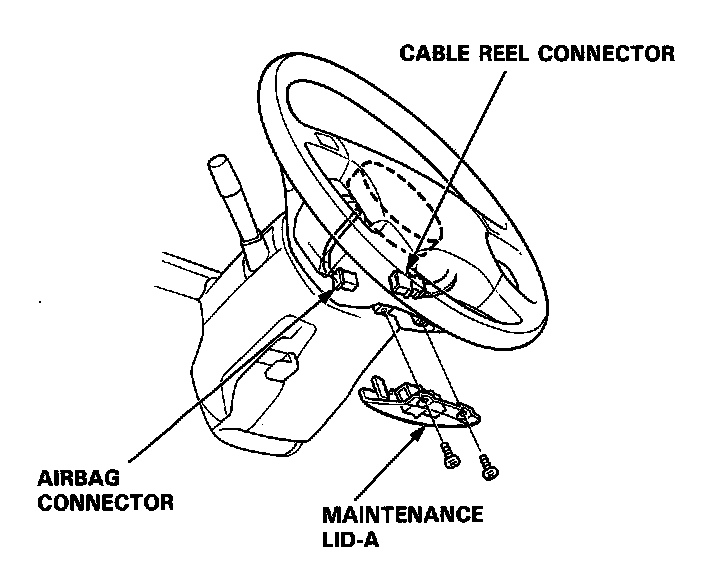
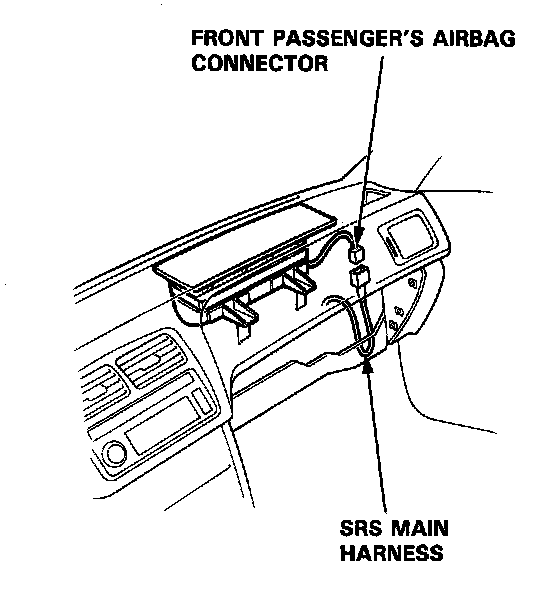
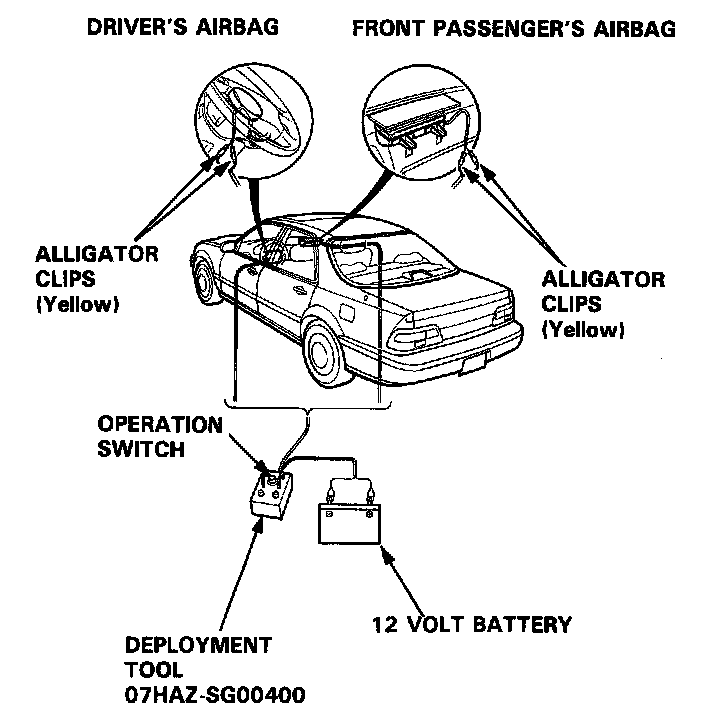
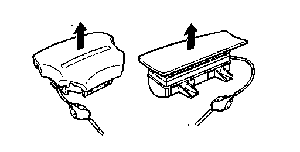

Air Bag and Seat Belt Pretensioner Disposal
Airbag Assembly Disposal
Before scrapping any airbag assembly (including one in a whole car to be scrapped) the airbag must be deployed. If the car is still within the warranty period, before deploying the airbag, the Acura District Service Manager must give approval and/or special instructions.
Only after the airbag is already deployed (as the result of vehicle collision, for example) can the normal scrapping procedure be done.
If the airbag appears intact (not deployed) it should be treated with extreme caution.
Follow the procedure, described below.
Airbag Deployment: In-Car
NOTE: If an SRS car containing an intact airbag is to be entirely scrapped, the airbag should be deployed while still in the car.
It should not be considered a salvageable part and should never be installed in another car.
WARNING: Confirm that the airbag assembly is securely attached to the steering wheel; otherwise. severe personal injury could result during airbag deployment.
1. Disconnect both the negative cable and positive cable from the battery.
2. Confirm that the special tool is functioning properly by following the check procedure on the label of the tool set box.
Driver's Airbag:
3. Remove the maintenance lid A, then disconnect the connector between the airbag and cable reel.

Front Passenger's Airbag:
4. Remove the glove box, then disconnect the connector between the front passenger's airbag and SRS main harness.

5. Cut off the airbag connector and connect the special tool alligator clips to the airbag. Place the special tool approximately thirty feet away from the airbag.

6. Connect a 12 volt battery to the tool:
- If the green light on the tool goes on, the airbag igniter circuit is defective and cannot be deployed. Go to Damaged Airbag Special Procedure.
- If the red light on the tool goes on, the airbag is ready to be deployed.
7. Push the tool's deployment switch. The airbag should deploy (deployment is both highly audible and visible - a loud noise and rapid inflation of the bag, followed by slow deflation of the bag until it hangs loosely).
- If audible/visible deployment happens and the green light on the tool goes on, continue with this procedure.
If deployment does not happen, yet the green light goes ON, the airbag igniter is defective and cannot be deployed.
Go to Damaged Airbag Special Procedure.
WARNING: During deployment, the airbag assembly can become hot enough to burn you. Wait thirty minutes after deployment before touching the assembly.
8. Dispose of the complete airbag assembly. No part of it can be reused.
Airbag Deployment: Out-of-car.
NOTE: If an intact airbag assembly has been removed from a scrapped car or has been found defective or damaged during transit, storage or service, it should be deployed as follows:
WARNING: Position the airbag assembly face up, outdoors on flat ground at least thirty feet from any obstacles or people.

1. Confirm that the special tool is functioning properly by following the check procedure on this page or on the tool box label.
2. Disconnect the short connector from the airbag harness.
3. Follow steps 5,6,7 and 8 of the in-car deployment procedure.
Damaged Airbag Special Procedure.
WARNING: If an airbag assembly cannot be deployed, it should not be treated as normal scrap; it should still be considered a potentially explosive device that can cause serious injury.
1. If installed in a car, follow the removal procedure on page 23-360.
2. In all cases, make sure a short connector is properly attached to the airbag assembly harness.
3. Package the airbag assembly using exactly the same packaging that a new replacement airbag assembly came in.
4. Mark the outside of the box "DAMAGED AIRBAG NOT DEPLOYED" so it does not get confused with your parts stock.
5. Contact your ACURA District Service Manager for the method and address to return it to ACURA for disposal.
Deployment Tool: Check Procedure.
1. Connect the yellow clips to both switch protector handles on the tool; connect the tool to a battery.
2. Push the operation switch: green means tool is OK; red means tool is faulty.
3. Disconnect the battery and the yellow clips.